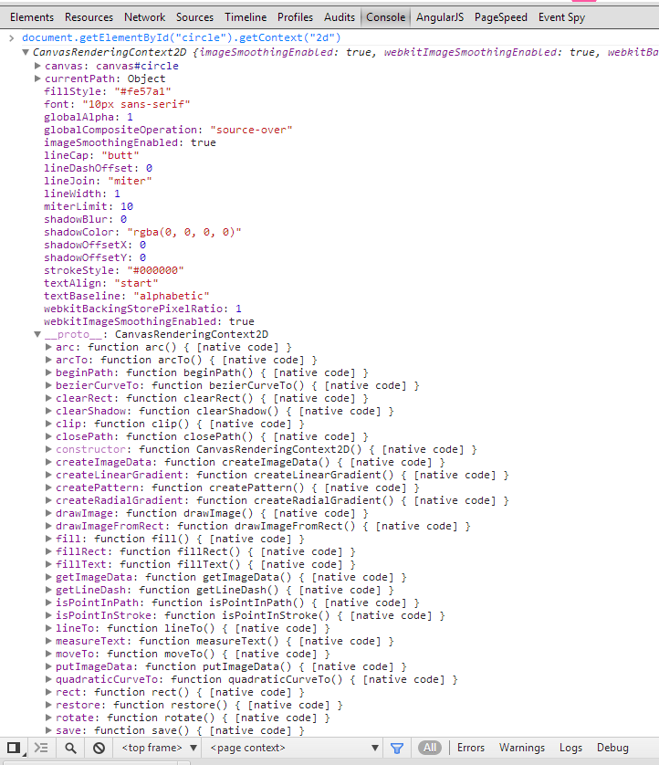

An Introduction to <canvas>
Rob Larsen
2013.11.6
Download (http://roblarsen.github.io/rob-larsen-presentations/canvas/slides/index.html) | PDFWhat we're going to talk about
- About me
- <canvas>
- Canvas Libraries
Me
Work
- I've been making web sites since 1997
- I've been primarily focused on HTML, CSS & JavaScript that whole time
- Formerly an agency guy/consultant. Lots of big brand stuff (Adidas, Motorola, Samsung, etc.)
- Nowadays I'm the client & I come with 100% more suits
Seriously, suits
Institutional investment management is serious business
Work
- I'm roblarsen on Github | +RobLarsen on G+
- I'm @roblarsenwww (web stuff) @robreact (everything else) on Twitter
- I have a blog @ htmlcssjavascript.com
- I wrote this book. I'm working on another one. Best question today gets a fee copy of my book!
Art
DrunkenFist.com and the freshly launched Java+++
What's Canvas?
The <canvas> element and associated API started life as an Apple extension to HTML. From there it blossomed into one of the early stars of the HTML5 era.
The <canvas> element provides a scriptable interface for drawing two-dimensional images in the browser. Think... dynamic PNGs. Even without full browser support on the desktop, developers have embraced canvas fully.
What's Canvas?
It’s been used for everything from high traffic visualizations to game engines, a system for delivering custom fonts, and a port of the Processing programming language into JavaScript.
Control
It's an extremely low level API. This means you often have to do a bit of work but you have complete, pixel level control over the image.
That's Both Good and Bad
Full control and a low level API sometimes you have to do things that are just silly.
In Action
The simplest part of working with canvas is the <canvas> element itself. A <canvas> element operates much like any other replaced element like <video> or <img>. The big difference is that it lacks a src attribute. The “src” of the canvas image is provided by JavaScript.
In Action
The JavaScript is just series of commands that will manipulate the canvas in different ways. It begins with a context which is a reference to canvas. the context provides methods to interact with the canvas and properties about the canvas.
The Context
The element looks like this
Viewing Source
<canvas id="circle" width="800" height="300"></canvas>
var ctx = document.getElementById( "circle" ).getContext( "2d" );
ctx.beginPath();
ctx.arc( 400, 150, 75, 0, Math.PI*2, true );
ctx.fillStyle = "#fe57a1";
ctx.closePath();
ctx.fill();
Did I say low level API?
I sure did. Everyone knows arc is all you need to draw a circle when you have Math.PI*2
ctx.arc( 400, 150, 75, 0, Math.PI*2, true );
Support
data from caniuse.comCanvas Strengths
Canvas is great for applications and visualization that require intense animation, real-time interaction and/or many "elements." Other common animated elements like SVG elements or DIVs are DOM elements so working with them is kind of scary. Thousands of "elements" in the canvas is still just the one element being manipulated pixel by pixel.
Canvas Strengths
- Games
- Real time visualizations
- Image manipulation
In Practice
Let's make some stuff with canvas.
Core Canvas
This specification defines the 2D Context, Level 2 for the HTML canvas element. The 2D Context provides objects, methods, and properties to draw and manipulate graphics on a canvas drawing surface.
View Source
function draw( data ) {
ctx.fillRect( 0, 0, 900, 300 );
var len = data.length,
width = 900/len,
gradient = ctx.createLinearGradient( 0, 0, 0, 300 );
gradient.addColorStop( ".5", "#003366" );
gradient.addColorStop( "1.0", "#ccff00" );
ctx.fillStyle = gradient;
for ( var i=0; i<len; i++ ) {
ctx.fillRect( i, 300, width, -data[i] );
}
}
Core Canvas +-
- Pluses:
- Not a library
- POWERFUL
- Minuses:
- Lower level API
Canvas: Cee.js
Cee.js is a small helper library for the Canvas 2d API. The goal is to extend and enhance the basic API while still remaining familiarI'm partially to blame (also, yay @bobholt and @marcneuwirth)
 http://roblarsen.github.io/CeeJS/
http://roblarsen.github.io/CeeJS/
That Logo in Canvas
View Source
function draw(data) {
ctx.reset();
var len = data.length,
width = 900/len,
fill;
for ( var i=0; i<len; i = i + 10 ) {
var dataLen = data[i];
for ( var j = 0; j < dataLen; j = j+10 ){
fill = "rgb("+j+","+(255-j)+",255)";
ctx.fillCircle({
x : i,
y : 300 - j,
radius : 4,
fillStyle : fill
});
}
}
}
Canvas: Cee.js +-
- Pluses:
- Familiar API, just enhanced
- Tiny (4k gzipped)
- It's got a really nice personality
- Chaining
- Minuses:
- Full of youthful exuberance
- Remains low level
- Not a fancy game developer tool
Canvas: JavaScript InfoVis Toolkit
The JavaScript InfoVis Toolkit provides tools for creating Interactive Data Visualizations for the Web.
View Source
icicle = new $jit.Icicle({
injectInto : 'infovis',
animate : animate,
offset : 1,
cushion : false,
constrained : true,
levelsToShow : 4,
Tips : {
enable : true,
type : 'Native',
offsetX : 20,
offsetY : 20,
onShow : function(tip, node){
var count = 0;
node.eachSubnode(function(){
count++;
});
tip.innerHTML = "<div class=\"tip-title\"><b>Name:</b> "
+ node.name + "</div><div class=\"tip-text\">" + count
+ " children</div>";
}
},
Events: {
enable : true,
onClick : function( node ){
if ( node ) {
icicle.tips.hide();
icicle.enter( node );
}
},
onRightClick: function(){
icicle.tips.hide();
icicle.out();
}
},
Label: {
type : labelType,
color : '#fff',
style : 'bold',
size : 12
},
onCreateLabel: function(domElement, node){
domElement.innerHTML = node.name;
var style = domElement.style;
style.fontSize = '0.9em';
style.display = '';
style.cursor = 'pointer';
style.color = '#fff';
style.overflow = 'hidden';
},
onPlaceLabel: function(domElement, node){
var style = domElement.style,
width = node.getData( 'width' ),
height = node.getData( 'height' );
if ( width < 7 || height < 7 ) {
style.display = 'none';
} else {
style.display = '';
style.width = width + 'px';
style.height = height + 'px';
}
}
});
icicle.loadJSON( json );
icicle.refresh();
Canvas:JIT +-
- Pluses:
- Strong foundation
- Straightforward API
- Minuses:
- Out of the box visualizations are skeletal
Canvas: Other Libraries
- sigma.js "an open-source lightweight JavaScript library to draw graphs, using the HTML canvas"
- paper.js "Scriptographer ported to JavaScript and browser, using HTML5 Canvas"
- Peity "progressive <canvas> piecharts"
- arbor.js "a graph visualization library using web workers and jQuery"
- envision "a library for creating fast, dynamic and interactive HTML5 visualizations.
- CanvasQuery "use HTML5 Canvas with jQuery syntax"
- Processing.js "the sister project of the popular Processing visual programming language"
Canvas Reference
Thanks!
roblarsen on Github | @robreact on Twitter
blog @ htmlcssjavascript.com